Astra Streaming QuickStart
This QuickStart aims to make you familiar with the following steps:
-
Prerequisite: Create an Astra account, if you don’t have one already.
-
Optional: Download and configure Apache Pulsar command-line (CLI) tools.
-
Optional: Use the Apache Pulsar CLI tools to produce and consume messages.
-
Optional: Review messaging statistics.
-
Optional: Create an Astra Streaming sink.
-
Optional: Delete an Astra Streaming tenant.
Unresolved include directive in modules/ROOT/pages/astream-quick-start.adoc - include::page$create-a-tenant.adoc[]
Create an Astra Streaming namespace
When Astra Streaming creates the new streaming tenant, it automatically creates a new namespace called default. However, you can add a namespace:
-
Click the Namespaces tab…
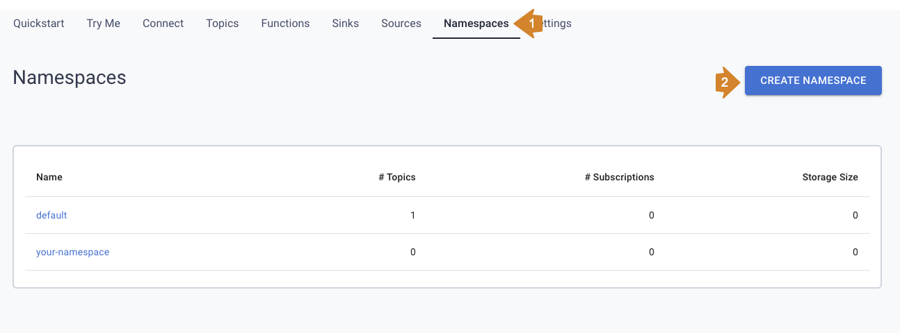 -
… and click Add Namespace
-
Enter a namespace name…
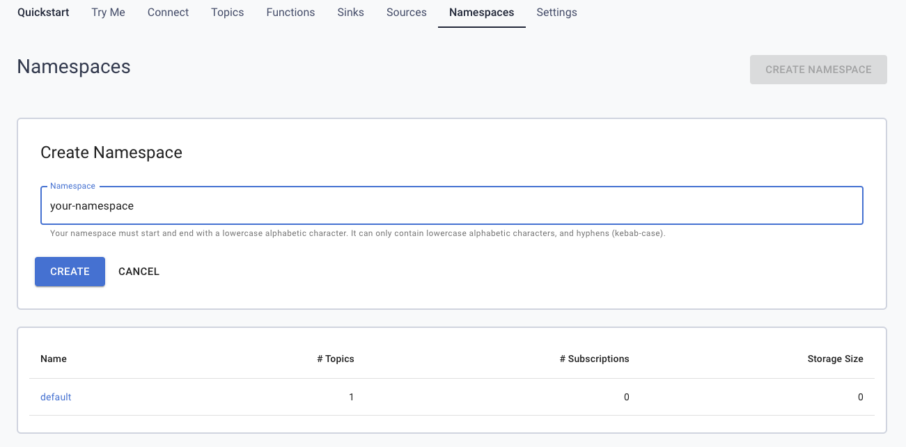 -
… and click Save.
Your namespace name must start with a lowercase alphabetic character. It can only contain lowercase alphabetic characters, numbers, and hyphens (kebab-case).
Create an Astra Streaming topic
With your tenant and namespace in place, you can now create a new topic:
-
Click the Topics tab…
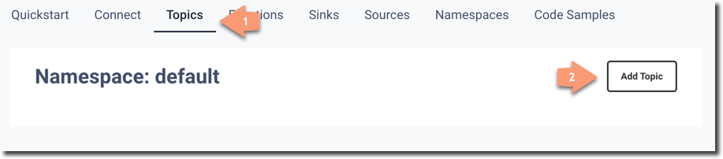 -
… and click Add Topic
-
Enter a topic name…
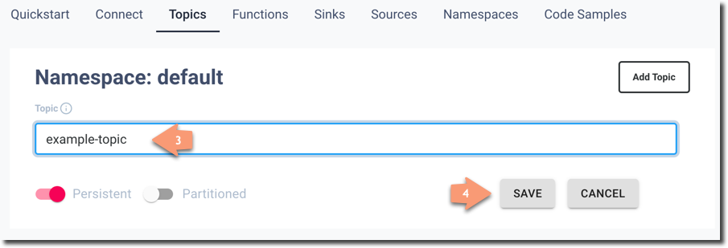 -
… and click Save.
You can leave Persistent and Partitioned at their default settings.
Download Pulsar connection information
You’ll need the following information to connect to your new Astra Streaming topic:
-
Broker Service URL: The Pulsar Binary Protocol URL used for production and consumption of messages.
-
Web Service URL: URL used for administrative operations.
-
Astra web token: The JWT used for authentication in all Astra Streaming operations.
Astra Streaming let’s you download a ready-to-go configuration file containing all of that information pre-populated, so let’s download it now:
-
Click the Connect tab…
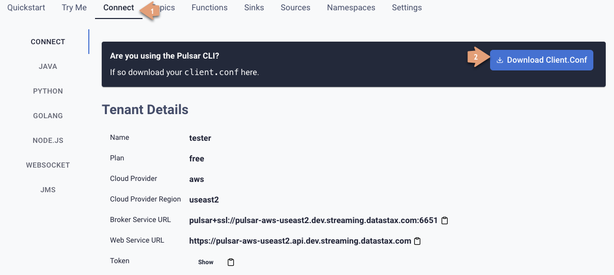 -
… and then click Download Client.conf
-
Save the
client.conffile to a convenient location.
Download and configure Apache Pulsar command line tools
To interact with your Astra Streaming topic, you can use the command line tools included with the Apache Pulsar distribution.
Download and configure Apache Pulsar:
-
Download the current binary of Apache Pulsar.
-
Extract the Apache Pulsar zip file to a convenient directory.
-
Copy the
client.conffile you downloaded in Download Pulsar connection information and copy it to the/confdirectory.
The Apache Pulsar command line tools are now configured and ready to use.
Use the Apache Pulsar command line tools
You can use the Apache Pulsar command line tools to easily interact with your Astra Streaming Pulsar instance. We’ll take a look at the most useful commands in this section.
|
You can find all of the Apache Pulsar command line utilities in the |
Get information about your Astra Streaming Pulsar instance
Since you may not remember details about your Astra Streaming Pulsar instance, let’s query some information using the pulsar-admin utility:
|
If you can’t remember your tenant name, retrieve it from the Astra Streaming web console. |
-
Retrieve the namespaces associated with your tenant:
-
Retrieve the topics within a namespace:
The URI, persistent://<tenant-name>/default/<topic-name>, is what we’ll use to
target a particular topic in the following sections.
|
The following
|
For more information on pulsar-admin see the
Apache Pulsar documentation.
Produce some messages for your topic
Let’s begin by sending some messages to your Astra Streaming instance using
the pulsar-client produce command. You’ll produce 100 Hello world messages:
./pulsar-client produce -m "Hello world" -n 100 \
persistent://<tenant-name>/default/<topic-name>13:52:49.857 [pulsar-client-io-1-1] INFO org.apache.pulsar.client.impl.ConnectionPool
- [[id: 0x8efe7ee3, L:/192.168.50.153:60842 -
R:pulsar-aws-useast2.dev.streaming.datastax.com/3.130.180.131:6651]] Connected to server
... Additional status messages...
R:pulsar-aws-useast2.dev.streaming.datastax.com/3.130.180.131:6651] Disconnected
13:52:59.609 [main] INFO org.apache.pulsar.client.cli.PulsarClientTool
- 100 messages successfully producedConsume messages from your topic
With some messages in your topic, you can use pulsar-client consume to consume
one of them:
./pulsar-client consume -p Earliest -t Shared -s test-subscription \
persistent://<tenant-name>/default/<topic-name>13:56:16.612 [pulsar-client-io-1-1] INFO org.apache.pulsar.client.impl.ConnectionPool
- [[id: 0x34f3b14e, L:/192.168.50.153:60858
- R:pulsar-aws-useast2.dev.streaming.datastax.com/3.130.180.131:6651]]
Connected to server
... Additional status messages...
----- got message -----
key:[null], properties:[], content:Hello world
13:56:17.319 [main] INFO org.apache.pulsar.client.impl.PulsarClientImpl
- Client closing. URL: pulsar+ssl://pulsar-aws-useast2.dev.streaming.datastax.com:6651
13:56:17.382 [pulsar-client-io-1-1] INFO org.apache.pulsar.client.impl.ConsumerImpl
- [persistent://example-tenant/default/example-topic] [test-subscription]
Closed consumer
13:56:17.388 [pulsar-client-io-1-1] INFO org.apache.pulsar.client.impl.ClientCnx
- [id: 0x34f3b14e, L:/192.168.50.153:60858 !
R:pulsar-aws-useast2.dev.streaming.datastax.com/3.130.180.131:6651] Disconnected
13:56:17.393 [pulsar-client-io-1-1] INFO org.apache.pulsar.client.impl.ClientCnx
- [id: 0x1339b07b, L:/192.168.50.153:60859 !
R:pulsar-aws-useast2.dev.streaming.datastax.com/3.130.180.131:6651]
Disconnected
13:56:17.397 [main] INFO org.apache.pulsar.client.cli.PulsarClientTool
- 1 messages successfully consumedNotice that the content of the message outputs after the ----- got message -----
line.
Of course, you created 100 messages, and consumed one, so that means there are
still 99 messages hanging around in the topic. We can specify the -n 99 flag
to consume the remaining messages:
./pulsar-client consume -p Earliest -t Shared -n 99 -s test-subscription \
persistent://<tenant-name>/default/<topic-name>14:18:09.990 [pulsar-client-io-1-1] INFO org.apache.pulsar.client.impl.ConnectionPool
- [[id: 0xe2a6fe1f, L:/192.168.50.153:60958
- R:pulsar-aws-useast2.dev.streaming.datastax.com/3.143.105.197:6651]]
Connected to server
... Additional status messages...
----- got message -----
key:[null], properties:[], content:hello world
----- got message -----
key:[null], properties:[], content:hello world
----- got message -----
key:[null], properties:[], content:hello world
... Additional retrieved messages...
14:18:10.760 [main] INFO org.apache.pulsar.client.impl.PulsarClientImpl
- Client closing. URL: pulsar+ssl://pulsar-aws-useast2.dev.streaming.datastax.com:6651
14:18:10.809 [pulsar-client-io-1-1] INFO org.apache.pulsar.client.impl.ConsumerImpl
- [persistent://example-tenant/default/example-topic] [test-subscription]
Closed consumer
14:18:10.812 [pulsar-client-io-1-1] INFO org.apache.pulsar.client.impl.ClientCnx
- [id: 0x81b78021, L:/192.168.50.153:60959 !
R:pulsar-aws-useast2.dev.streaming.datastax.com/3.143.105.197:6651]
Disconnected
14:18:10.817 [pulsar-client-io-1-1] INFO org.apache.pulsar.client.impl.ClientCnx
- [id: 0xe2a6fe1f, L:/192.168.50.153:60958 !
R:pulsar-aws-useast2.dev.streaming.datastax.com/3.143.105.197:6651]
Disconnected
14:18:10.821 [main] INFO org.apache.pulsar.client.cli.PulsarClientTool
- 99 messages successfully consumedFor more information on pulsar-client see the
Apache Pulsar documentation.
Review messaging statistics for a topic
The Astra Streaming console reports on a variety of useful messaging statistics.
Let’s create a new topic and use the pulsar-perf testing tool to generate some
synthetic messaging traffic.
Create a new topic
-
Create a new topic following the instructions in Create an Astra Streaming topic.
-
Click the topic name to open the statistics view:
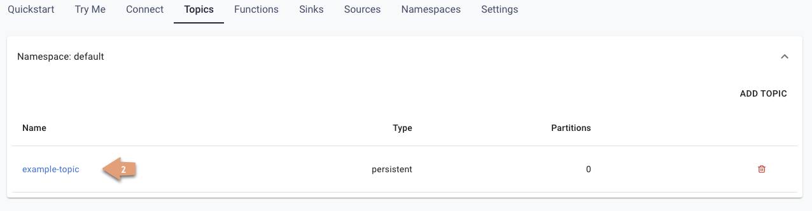 -
Copy the URI adjacent Topic Name to the clipboard:
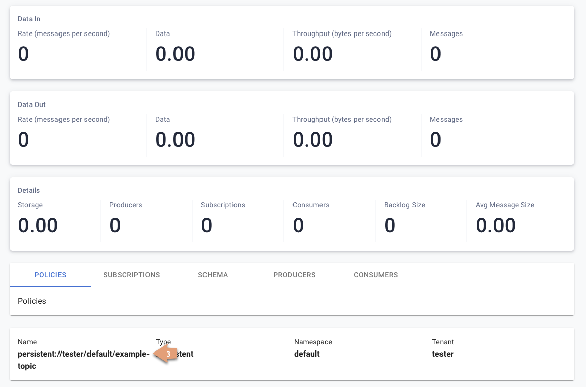
Set the topic statistics screen aside for now. You’ll refer back to it once you’ve got some message traffic flowing.
Set up a message producer
You’ll use pulsar-perf produce to create some message traffic for your new topic.
In addition to the topic URI, the command specifies -n 5 which creates 5 topic
producers. After a brief initialization and warm up period, pulsar-perf
will begin to publish messages.
Open a new terminal and, replacing persistent://<tenant-name>/default/<topic-name>
with your own topic URI, enter:
./pulsar-perf produce -n 5 \
persistent://<tenant-name>/default/<topic-name>... Additional status messages...
[pulsar-perf-producer-exec-1-1] INFO org.apache.pulsar.testclient.PerformanceProducer
- Created 5 producers
11:42:47.128 [pulsar-client-io-2-1] WARN com.scurrilous.circe.checksum.Crc32cIntChecksum
- Failed to load Circe JNI library. Falling back to Java based CRC32c provider
11:42:54.881 [main] INFO org.apache.pulsar.testclient.PerformanceProducer
- Throughput produced: 77.1 msg/s --- 0.0 Mbit/s --- failure 0.0 msg/s
--- Latency: mean: 47.355 ms - med: 47.388 - 95pct: 52.136 - 99pct: 60.332
- 99.9pct: 68.171 - 99.99pct: 74.945 - Max: 74.945
11:43:04.921 [main] INFO org.apache.pulsar.testclient.PerformanceProducer
- Throughput produced: 100.0 msg/s --- 0.0 Mbit/s --- failure 0.0 msg/s
--- Latency: mean: 47.144 ms - med: 47.216 - 95pct: 50.479 - 99pct: 57.532
- 99.9pct: 75.748 - 99.99pct: 76.038 - Max: 76.038
11:43:14.949 [main] INFO org.apache.pulsar.testclient.PerformanceProducer
- Throughput produced: 100.0 msg/s --- 0.0 Mbit/s --- failure 0.0 msg/s
--- Latency: mean: 46.905 ms - med: 47.080 - 95pct: 49.409 - 99pct: 59.734
- 99.9pct: 72.989 - 99.99pct: 74.619 - Max: 74.619
^C11:43:19.208 [Thread-1] INFO org.apache.pulsar.testclient.PerformanceProducer
- Aggregated throughput stats --- 3206 records sent --- 93.302 msg/s --- 0.007 Mbit/s
11:43:19.231 [Thread-1] INFO org.apache.pulsar.testclient.PerformanceProducer
- Aggregated latency stats --- Latency: mean: 47.095 ms - med: 47.188
- 95pct: 50.436 - 99pct: 60.078 - 99.9pct: 74.945 - 99.99pct: 77.277
- 99.999pct: 77.277 - Max: 77.277Set up a message consumer
Now that you’re producing messages, you can create a process to consume them.
In addition to the topic URI, the command specifies -n 5 which sets the number
of consumers to 5 as well as -st Shared which sets the subscription type
to Shared which is required if you want more than a single consumer for the topic.
As with the produce command, there will be a brief warm up and initialization
and the consumer will start consuming messages
Open a new terminal and, replacing persistent://<tenant-name>/default/<topic-name>
with your own topic URI, enter:
./pulsar-perf consume -n 5 -st Shared \
persistent://<tenant-name>/default/<topic-name>11:50:37.976 [main] INFO org.apache.pulsar.testclient.PerformanceConsumer
- Start receiving from 5 consumers per subscription on 1 topics
11:50:38.026 [pulsar-client-io-1-1] WARN com.scurrilous.circe.checksum.Crc32cIntChecksum
- Failed to load Circe JNI library. Falling back to Java based CRC32c provider
11:50:47.988 [main] INFO org.apache.pulsar.testclient.PerformanceConsumer
- Throughput received: 93.192 msg/s -- 0.007 Mbit/s --- Latency: mean: 533.483 ms
- med: 530 - 95pct: 999 - 99pct: 1041 - 99.9pct: 1053 - 99.99pct: 1055 - Max: 1055
11:50:58.002 [main] INFO org.apache.pulsar.testclient.PerformanceConsumer
- Throughput received: 99.893 msg/s -- 0.008 Mbit/s --- Latency: mean: 548.510 ms
- med: 546 - 95pct: 997 - 99pct: 1036 - 99.9pct: 1047 - 99.99pct: 1047 - Max: 1047
11:51:08.009 [main] INFO org.apache.pulsar.testclient.PerformanceConsumer
- Throughput received: 99.927 msg/s -- 0.008 Mbit/s --- Latency: mean: 546.160 ms
- med: 545 - 95pct: 997 - 99pct: 1037 - 99.9pct: 1041 - 99.99pct: 1049 - Max: 1049
11:51:18.015 [main] INFO org.apache.pulsar.testclient.PerformanceConsumer
- Throughput received: 99.944 msg/s -- 0.008 Mbit/s --- Latency: mean: 549.184 ms
- med: 546 - 95pct: 996 - 99pct: 1036 - 99.9pct: 1045 - 99.99pct: 1052 - Max: 1052
11:51:28.026 [main] INFO org.apache.pulsar.testclient.PerformanceConsumer
- Throughput received: 100.002 msg/s -- 0.008 Mbit/s --- Latency: mean: 546.996 ms
- med: 547 - 95pct: 998 - 99pct: 1039 - 99.9pct: 1048 - 99.99pct: 1048 - Max: 1048For more information on pulsar-perf see the
Apache Pulsar documentation.
Review topic statistics
If you return to your topic details screen and refresh your browser, you’ll now see statistics information for your new topic:
You can track the following statistics on this tab:
-
Data In
-
Rate: Sum of inbound (producer) messages per second
-
Bytes: Sum of inbound (producer) message size in bytes
-
Throughput: Sum of inbound (producer) message throughput in bytes per second
-
Messages: Sum of inbound (producer) messages
-
-
Data Out
-
Rate: Sum of outbound (consumer) messages per second
-
Bytes: Sum of outbound (consumer) message size in bytes
-
Throughput: Sum of outbound (consumer) message throughput in bytes per second
-
Messages: Sum of outbound (consumer) messages
-
-
Details
-
Storage: Disk space used to store messages in bytes
-
Producers: Number of producers sending messages to the topic
-
Subscriptions: Number of subscribers to the topic
-
Consumers: Number of consumers retrieving messages from the topic
-
Backlog Size: Disk space consumed by the message backlog in bytes
-
Avg Message Size: Average size of each inbound (producer)/outbound (consumer) message in bytes
-
Storage versus Backlog
The Backlog statistic represents messages that are stored in subscriptions for consumers. As messages are consumed and acknowledged by consumers, they are removed from the backlog. When the backlog is 0, then all messages in the subscription have been acknowledged.
The Storage statistic, on the other hand, represents the total amount of messages stored in the topic, including messages that are part of subscription backlog as well as messages that are being retained for message replay.
|
Stored messages that are no longer needed for replay or subscription backlogs are not deleted immediately. Thus, the storage value on a topic can be greater than zero even if message retention is disabled and there are no messages in subscription backlogs. |
Review subscription statistics
Click the Subscriptions tab and you’ll see aggregate statistics for the consumers subscribed to your topics:
You can track the following statistics on this tab:
-
Name: Subscription name or prefix if there are multiple consumers for the subscription
-
Rate Out: The rate messages are flowing outbound in messages per second
-
Throughput Out: The outbound message throughput in bytes per second
-
Bytes Out: Sum of the size of all outgoing messages in bytes
-
Message Count: Sum of all outgoing messages
-
Redeliver: Sum of redelivered messages
-
Type: Type of subscription - Shared, Exclusive, Failover, or Key Shared
-
Consumers: Number of subscription consumers
Click on the expand glyph on the left side of the subscription line and you can view the messages in the subscription. The four glyphs on the right side of the subscription line allow you to peek at a message, go back to a message, skip forward through messages, and delete the subscription.
In the expand subscription view, you can track additional statistics on a per-consumer basis:
-
Name: Name of the subscription specific to the particular consumer
-
Rate Out: The rate messages are flowing outbound for the consumer in messages per second
-
Throughput Out: The throughput of messages for the consumer in bytes per second
-
Total Bytes Out: The total size of all outgoing messages for the consumer in bytes
Review producers statistics
Click the Producers tab and you’ll see aggregate statistics for the producers of your topics:
You can track the following statistics on this tab:
-
Name: Name of the producer
-
Average Message Size: The average message size in bytes
-
Producer ID: Number of the producer
-
Message Rate: The message rate per second
-
Throughput: The inbound message throughput in bytes per second
-
Connected Since: The time since the producer connected
Review consumers statistics
Click the Consumers tab and you’ll see aggregate statistics for the consumers of your topics:
You can track the following statistics on this tab:
-
Name: Name of the consumer
-
Subscription name: Subscription name that the consumer is consuming
-
Unacked Messages: The number of unacknowledged messages
-
Message Rate: The message rate per second
-
Throughput: The inbound message throughput in bytes per second
-
Last Ack Timestamp: The time when the message was acknowledged
-
Last Consume Timestamp: The time of the last consumed message
-
Connected Since: The time since the consumer connected
Create an Astra Streaming sink
To create an Astra DB or external ElasticSearch sink for Astra Streaming topics:
-
Click the Sinks tab…
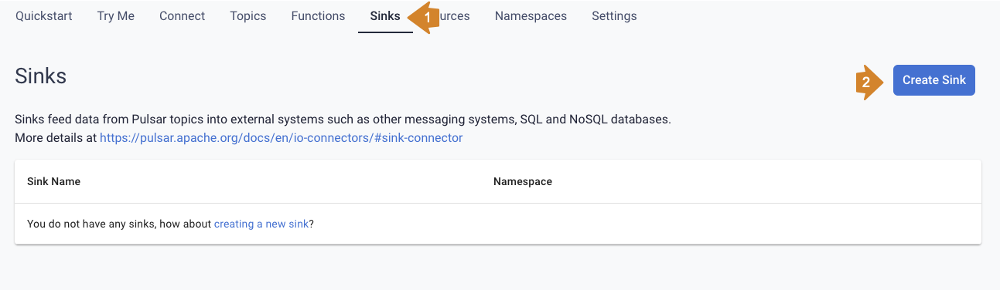 -
… and click Create Sink
-
First enter the namespace, sink type, and sink name…
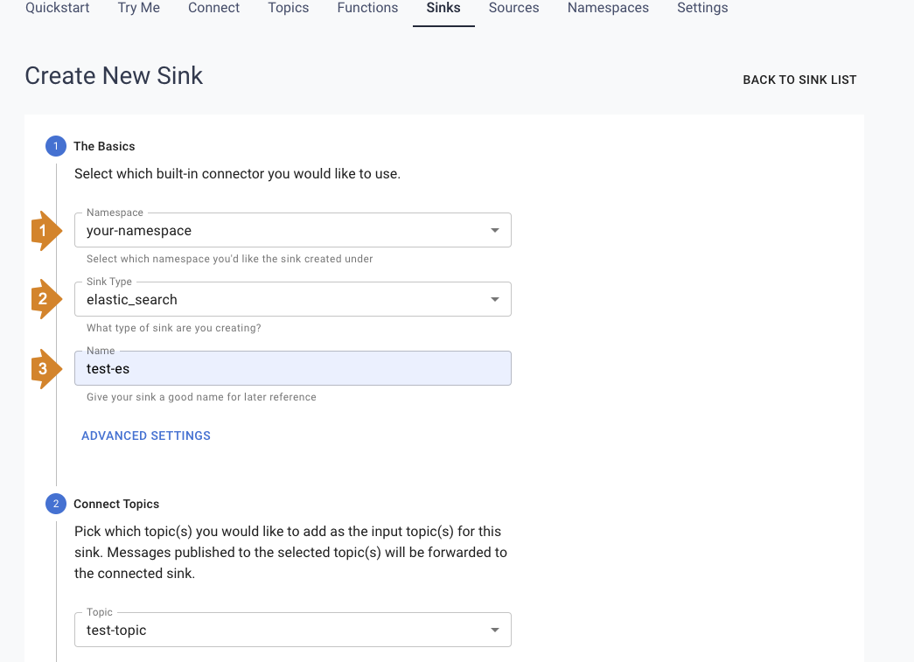 -
… then if making an Astra DB sink, enter the database name, keyspace name, table name, client ID, client secret, and the mapping for the sink:
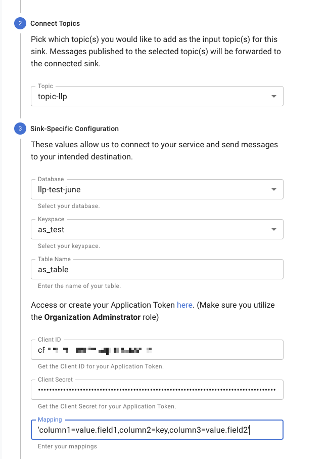 -
… or if making an ElasticSearch sink, enter the URL, index name, username, and password for the sink:
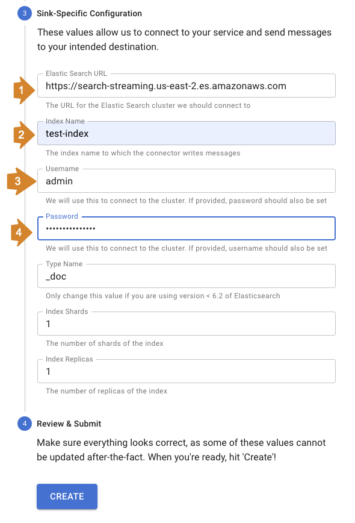 -
… and click Create.
Your sink name and index name must start with a lowercase alphabetic character. It can only contain lowercase alphabetic characters, numbers, and hyphens (kebab-case).